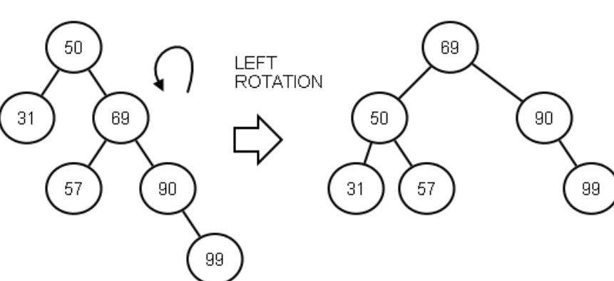

Name_________________________________________________
Object referred to by this which is is implicitly passed as a parameter
Constructor that requires no arguments
Term for the rule that makes upcasts automatically allowed
Alternate term for "base class"
Use of inheritance in which you refine or extend an already working base class.
Resolving collisions in a hash table by looking downward for the next empty spot
Resolving collisions in a hash table by squaring the amount you step each time, to avoid clustering
Implementing this interface makes your class work with a for-each loop
Area of RTS that contains information for one currently-running function call
Saving the results of prior recursive calls to avoid repetition of calculation
Recursive case that does not make a recursive call.
Memory sequence of elements typical for a 2-D array in modern tensor libraries
General term for the "wrap around" memory order of our ArrQueue class
Three-word term for property indicated by big-O form, e.g. O(nlogn)
Term for O(n)
Two commonly used (in industry) sorting methods that have O(n^2) (n-squared) behavior
Sorting method that repeatedly "weaves" two small runs of sorted elements into a single larger sorted run.
Interface that describes a type that can self-compare, via a compareTo method
Language feature that permits several functions to have the same name.
Pseudo machine language into which Java source is translated.
Max value you can count up to in 32 bits (unsigned). An approximate value is OK.
The cube root of 32768
Class that is designed to hold an elemental type in order to make it an object
Runtime memory area from which new gets its storage.
One location in a hash table
Interface that defines an object usable to compare other objects
Any class that holds many values of some other type
Element chosen as the dividing value in a quicksort partition
Sorting algorithm that repeated scans unsorted elements to find the minimum (or maximum), and moves it down (or up) when found
Type of binary tree resulting from addition of all values in already-sorted order
Type of state-space search that operates like the TreeSet iterator
Term for a tree node that has no children
Max number of inversions possible in a 5 element array
Fill in this function for LinkStack, following the comments:
// Return true iff the top two items on the stack exist (stack has at least two
// elements) and they have the same data. Do this with just the single return
// statement -- a boolean expression not using ?:. Do NOT call any other stack methods.
boolean firstTwoSame() {
return __________________________________________________________;
}
Fill in this function for LinkStack, following the comments, and adding code only at the blank spaces:
// Pop the top n values off the stack, or fewer if there are not n
// values. Importantly, do this without calling any other method,
// and by a *single* assignment after the loop (no assignments in the
// loop).
void popMultiple(int n) {
Node temp;
for (temp = head; ________________ && _______________; temp = temp.next)
;
_____________________________;
}
For an array of 8 elements, what is the maximum number of times that insertion sort's inner loop could run (the maximum total executions of that loop's body across the entire run)? What array contents would cause this? How many inversions would there be in the array? (Hint: the value is < 32))
For an array of 10 elements, what is the maximum number of memory write operations into the array that selection sort could do and why? What is the minimum number?
Consider the quicksort partition code below, and answer the following:
i. 6pts If all values are the same, say all equal to 42, how will the array be divided into hi and low parts? Is this OK? Why or why not?
ii. 12pts Write a single expression using the variables in the loop that determines whether the low side is smaller than the high side at any point during the partition (not just the end). Remember that the range being partitioned is [lo, hi).
if ( )
iii. 14pts Values equal to pivot can actually be used to balance the partition if you place them in whichever side (low or hi) is smallest. Without adding any new lines, do this by adding a single relatively sophisticated additional logic clause to the if (vals[toPlace < pivot]) line.
endOfLow = lo;
pivot = vals[hi-1];
for (toPlace = lo; toPlace < hi-1; toPlace++)
if (vals[toPlace] < pivot) {
temp = vals[toPlace];
vals[toPlace] = vals[endOfLow];
vals[endOfLow] = temp;
endOfLow++;
}
vals[hi-1] = vals[endOfLow]; // Move pivot to middle
vals[endOfLow] = pivot;
return endOfLow;
Below is an implementation of a merge algorith for LinkPQueue. This merges
the receiver object and the q2 parameter into a single queue (with the sorting
order determined by cmp). It doesn't copy data; it actually steals the nodes
from q2 and adds them into the receiver object, leaving q2 empty.
Fill in the blank lines so it works correctly. Do not add code other than for the blank lines.
// Merge q2's nodes into the receiver object, leaving q2 empty. Write a
// loop to directly merge the nodes, don't use recursion, an iterator
// or any other methods of the class.
public void merge(LinkPQueue<Item> q2) {
Node prior = null, nd1 = mHead, nd2 = q2.mHead, nextMerge;
while (nd2 != null) {
if (nd1 == null) { // Rest of q2 adds to end of main queue
nextMerge = nd2;
__________________;
nd2 = null;
} else if (cmp.compare((Item)nd1.data, (Item)nd2.data) > 0) {
nextMerge = nd1;
nd1 = nd1.next;
} else {
nextMerge = nd2;
nd2 = nd2.next;
_____________________________;
}
if (prior == null)
mHead = nextMerge;
else
prior.next = nextMerge;
___________________________;
}
q2.mHead = q2.mTail = null;
}
The selection sort algorithm has what order of complexity? Why?
If an implementation of insertion sort takes 0.1 second on average to sort an array of 10,000 elements, how long will it take on an array of 640,000 elements? Provide an estimate accurate to the tenth of a second. Note this can be done in your head if you remember powers of 2 and the nature of O(n^2) complexity.
If a balanced binary tree of 1,000 elements can be searched in 5 microseconds, how long would you expect a search to take on a balanced tree of 1,000,000 elements? Why?
If an
How many distinct objects (not just references) are created by this line of code? How many of them are String objects? String[][] arr = new String[5][3]
How many references are created by that same line? How many, if any, are null?
Write a declaraion of a member function "func" that has absolutely no parameters passed, hidden or otherwise.
Why is the following line illegal? (Assume Comparator is correctly imported) Comparator cmp = new Comparator(); (Note that use of the <> is optional in generics.)
Say function A calls B, which calls C, which calls D, and then D throws an exception that is caught in A. What changes, if any, to the RTS must result from throwing that exception?
Assume this loop compiles. Write an equivalent using just a standard while loop, and the fact that vals must implement Iterable. Don't worry about imports.
for (String s: vals)
# Loop body
Fill in the blanks, and fix any bugs, in this implementation of LPHashSet.check. Don't fix things that aren't broken. You don't need to check "steps", just the main logic.
private boolean check() {
int vCount = 0, nCount = 0, homeIdx;
for (int idx = 0; idx < table.length; idx++) {
if (table[idx] == null)
nCount++;
else if (________________________) {
vCount++;
homeIdx = Math.abs(table[idx].hashCode()) % table.length;
while (______________________) {
if (table[homeIdx] == null)
____________________________
homeIdx = (homeIdx + 1) % table.length;
}
}
}
return vCount == valCount || nCount == nullCount;
}
Fill in the missing lines in this implementation of getDistance for GemState
public int getDistance(State st) {
GemState gState = _________________________
int ndx, dist = 0, rDiff, cDiff;
for (ndx = 0; ndx < gState.mBoard.length; ndx++) {
if (gState.mBoard[ndx] != 0 _____________________________________) {
rDiff = (gState.mBoard[ndx]-1) / mColDim - ndx / mColDim;
cDiff = ___________________________________________________
dist += (rDiff > 0 ? rDiff : -rDiff) + (cDiff > 0 ? cDiff : -cDiff);
}
}
return dist;
}
a. 20pts In class we discussed the idea that a binary tree can be "rebalanced" without violating the left-right sorting order. Here is a diagram of such a rebalancing, where a skew toward greater depth at the right is rebalanced by a "left rotation". Using child as an intermediary reference, fill in the three assignments below so that the configuration on the left is modified into the configuration on the right.

Node root, child;
child = root->right;
_________________ = ________________
_________________ = ________________
_________________ = _______________
b. 15pts The array below represents a binary max heap (a binary heap with parents greater than children). Show how it will look after we insert the value 42. (Only two of the existing 8 values should change position.)
|45|40|30|20|35|10|15| 5| | |
0 1 2 3 4 5 6 7 8 9
becomes:
| | | | | | | | | | |
0 1 2 3 4 5 6 7 8 9